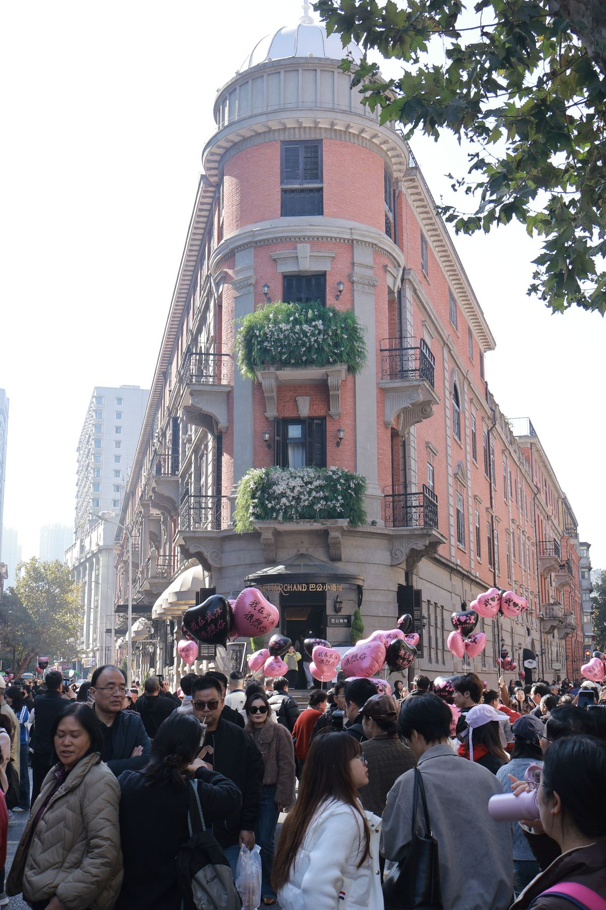
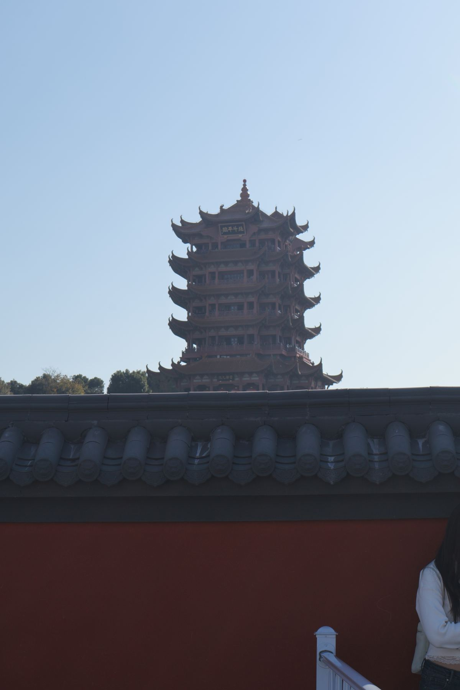
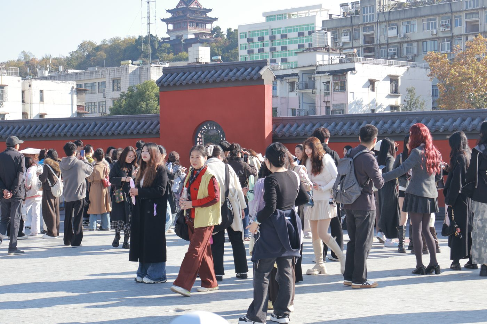
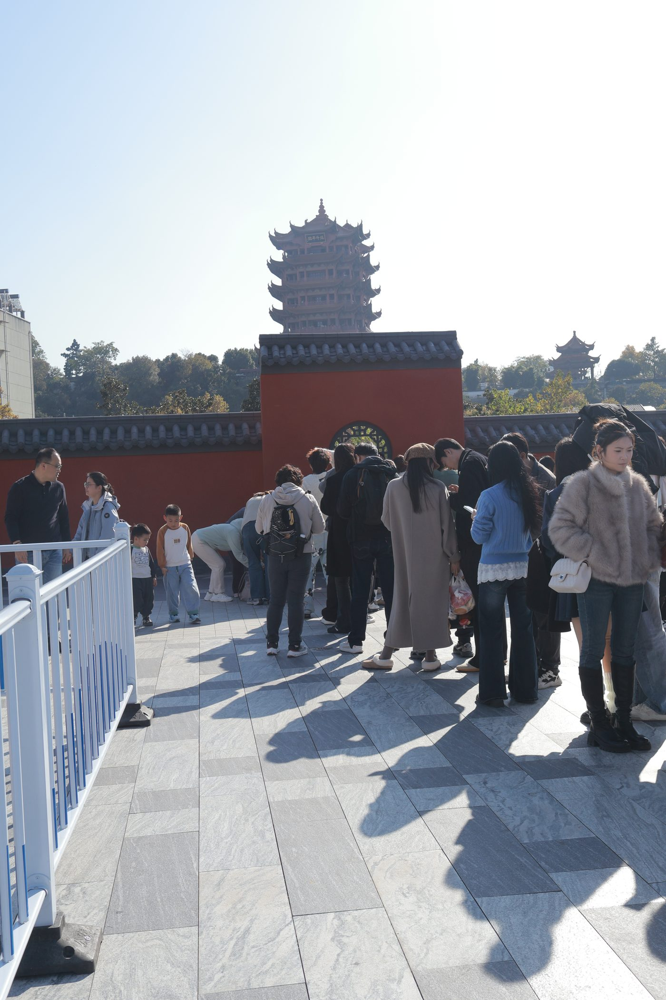
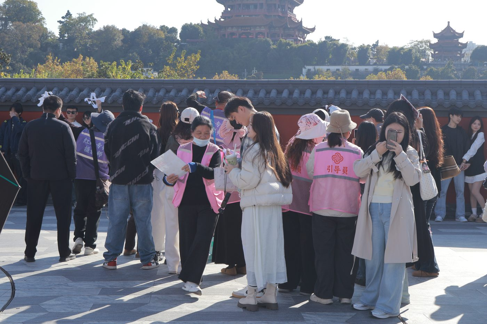
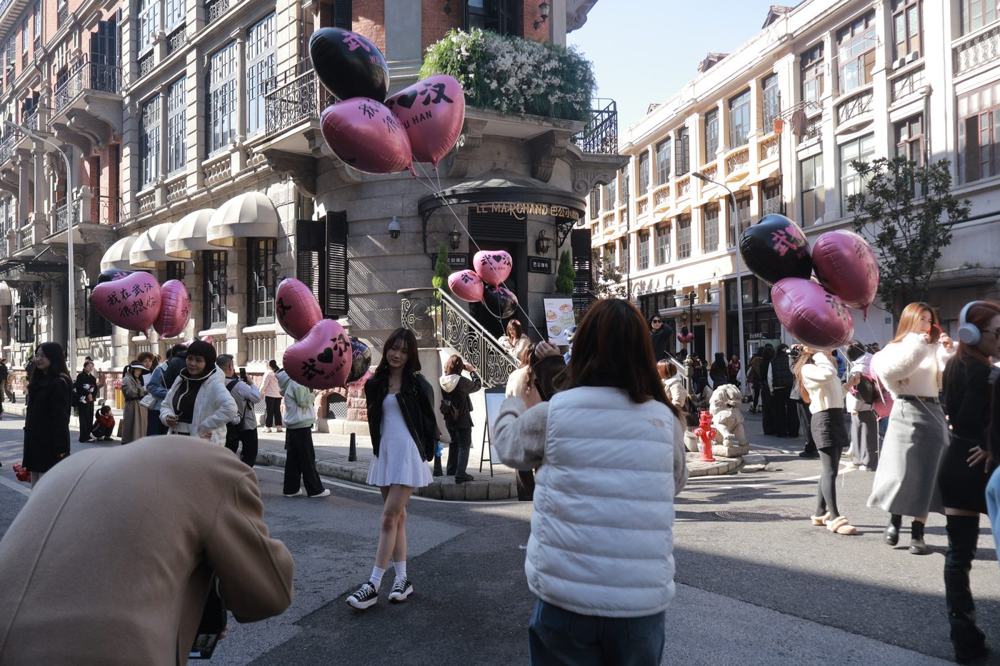

第一站
黄鹤楼红墙
红墙一火，相机比人还密。你是哪一派打卡选手？
武汉打卡 · 手账


背包带好啦
沿着虚线走
No. 01 · 武昌 × 汉口
武汉两个热门打卡点的公共空间观察。
来都来了，跟着这位小游客走一趟。红墙管得清楚，街角全靠默契——你更想先去哪儿？
第一站去哪儿？
选一个，咱们出发！放心，另一站一会儿也要去。
来都来了，当然要拍一张！
第一站
红墙一火，相机比人还密。你是哪一派打卡选手？

这里可是热门机位！看看大家都在怎么拍？
看看有多少人和你一样
3–5分钟 / 单次拍摄
37人 / 样本
74%
50 份样本里，大约七成四选择自拍。
等待时间数据待补充

稍等一下～
前面还有人正在拍，稍等一下就轮到你啦！
单次拍摄时长 3–5 分钟，来自 50 份样本中的 37 人（约 74%）。等待人数与等待时间没有确认数据，这里不填写具体数字。

选择摄影师吧
代拍这一侧，先看一组模拟占位数字
时间线事实来自公开报道。项目中现有 timeline 文件为媒体原图，未获转载授权，此处不嵌入。正式发布请换用已获授权的新闻配图。
红墙走红，商业摄影团队聚集，出现占位、排队和拉客等问题。
来源：极目新闻《黄鹤楼网红打卡地摄影团队扎堆商拍》
开始划分游客自拍区与商业代拍区域，尝试通过空间划分改善现场秩序。
来源：极目新闻《黄鹤楼红墙前划片，游客自拍与摄影师代拍都方便》（2024-07-04）
进一步细化现场管理，设置秩序维护岗和现场引导。措施仍在调整，效果有待持续观察。
来源：武汉晚报 / 武汉市政府网站《武昌区将黄鹤楼红墙前划定“游客自拍区”》（2025-06-11）
途中
好啦，下一站出发！
黄鹤楼红墙 巴公房子终于到啦！

街角没有围栏
下一站
终于到啦！开放街角，拍照的人和路过的人挤在同一块人行道上。
来到巴公房子，眼前正好有人在拍照，你会怎么做？

在模拟调查中，有 — 的人和你一样，选择了这一项。
开放空间中的秩序，不一定来自明确的边界，也可能来自使用者之间即时的协调。
终章
公共空间的秩序，不只是管理者划定边界的结果，也来自每一个使用者对他人的理解与体谅。
今天的武汉打卡之旅结束了。
你拍下的不只是照片，也参与了公共空间秩序的形成。